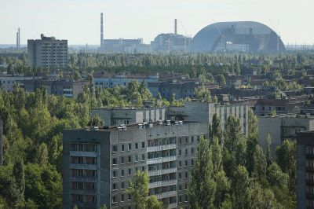

The Chernobyl Exclusion Zone is an officially designated exclusion area around the site of the Chernobyl nuclear reactor disaster. Established by the USSR military soon after the 1986 disaster, it initially existed as an area of 30 km radius from the Chernobyl Nuclear Power Plant designated for evacuation and placed under military control.Its borders have since been altered to cover a larger area of Ukraine. The Chernobyl Exclusion Zone borders a separately administered area, the Polesie State Radioecological Reserve, to the north, in Belarus. The Chernobyl Exclusion Zone is managed by an agency of the State Emergency Service of Ukraine, while the power plant and its sarcophagus (and replacement) are administered separately.
